<section style="font-family:'Inter','Segoe UI',Roboto,Helvetica,Arial,sans-serif;color:#1F2937;background:#FFFFFF;">
<div class="container" style="max-width:1140px;margin:0 auto;padding:0 16px;">

    <!-- ============ BADGES ============ -->
    <div style="display:flex;justify-content:space-between;flex-wrap:wrap;align-items:center;border-bottom:1px solid #E5E7EB;padding:14px 0;">
        <div style="display:flex;flex-wrap:wrap;">
            <span style="background:#017E84;color:#fff;font-size:13px;font-weight:600;padding:5px 18px;margin:3px;border-radius:50px;">Community</span>
            <span style="background:#714B67;color:#fff;font-size:13px;font-weight:600;padding:5px 18px;margin:3px;border-radius:50px;">Enterprise</span>
            <span style="background:#374151;color:#fff;font-size:13px;font-weight:600;padding:5px 18px;margin:3px;border-radius:50px;">Self-Hosted on Linux</span>
            <span style="background:#2563EB;color:#fff;font-size:13px;font-weight:600;padding:5px 18px;margin:3px;border-radius:50px;">Docker</span>
        </div>
        <div style="display:flex;flex-wrap:wrap;">
            <span style="background:#875A7B;color:#fff;font-size:13px;font-weight:600;padding:5px 18px;margin:3px;border-radius:50px;">Hosts Odoo 12 &ndash; 19</span>
        </div>
    </div>

    <!-- ============ HERO ============ -->
    <div style="text-align:center;padding:64px 0 32px;">
        <div style="display:inline-block;background:#F3E8FF;color:#6D28D9;font-weight:700;font-size:13px;letter-spacing:1px;padding:6px 16px;border-radius:50px;margin-bottom:18px;">YOUR OWN ODOO CLOUD, ON YOUR OWN SERVERS</div>
        <h1 style="font-size:46px;font-weight:800;line-height:1.15;color:#111827;margin:0 0 18px;">OdooCNSh</h1>
        <h2 style="font-size:24px;font-weight:600;line-height:1.45;color:#374151;margin:0 auto 18px;max-width:900px;">
            Host, deploy and operate <span style="color:#6D28D9;">dozens of Odoo instances</span> from one console &ndash;
            <span style="color:#059669;">Git branch = environment</span>, deploy on push, backups, logs and monitoring included.
        </h2>
        <p style="font-size:17px;line-height:1.7;color:#6B7280;max-width:860px;margin:0 auto 30px;">
            OdooCNSh is a complete self-hosted Odoo hosting platform for integrators, software houses, schools and companies.
            Install it on your own Linux server with one script, connect your GitHub or Gitee repositories, and every branch becomes a
            production, staging or development environment running in its own Docker container. Your data never leaves your servers.
        </p>

        <div style="display:flex;flex-wrap:wrap;justify-content:center;margin-bottom:36px;">
            <div style="background:#F9FAFB;border:1px solid #E5E7EB;border-radius:14px;padding:16px 22px;margin:6px;min-width:190px;">
                <div style="font-size:28px;font-weight:800;color:#6D28D9;">1 branch</div>
                <div style="font-size:14px;color:#6B7280;">= 1 isolated environment</div>
            </div>
            <div style="background:#F9FAFB;border:1px solid #E5E7EB;border-radius:14px;padding:16px 22px;margin:6px;min-width:190px;">
                <div style="font-size:28px;font-weight:800;color:#059669;">Seconds</div>
                <div style="font-size:14px;color:#6B7280;">to a new instance (template DB)</div>
            </div>
            <div style="background:#F9FAFB;border:1px solid #E5E7EB;border-radius:14px;padding:16px 22px;margin:6px;min-width:190px;">
                <div style="font-size:28px;font-weight:800;color:#2563EB;">Odoo 12&ndash;19</div>
                <div style="font-size:14px;color:#6B7280;">Community &amp; Enterprise</div>
            </div>
            <div style="background:#F9FAFB;border:1px solid #E5E7EB;border-radius:14px;padding:16px 22px;margin:6px;min-width:190px;">
                <div style="font-size:28px;font-weight:800;color:#714B67;">1 script</div>
                <div style="font-size:14px;color:#6B7280;">online or fully offline install</div>
            </div>
        </div>

        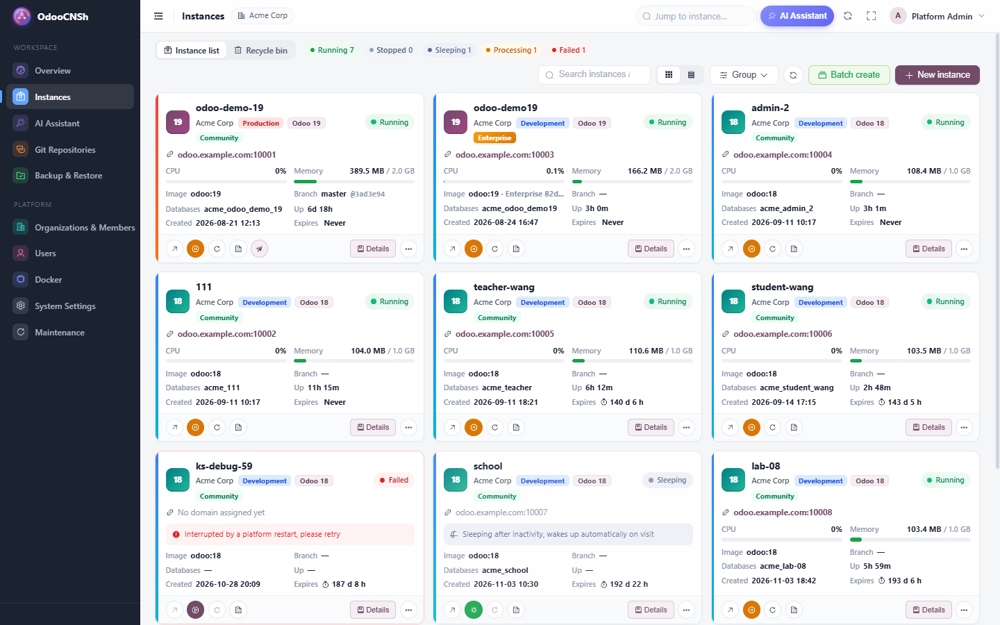
        <p style="font-size:14px;color:#9CA3AF;margin-top:12px;">Every instance at a glance: stage, Odoo version, edition, domain, live CPU and memory, uptime, expiry and one-click actions.</p>
    </div>

    <!-- ============ FEATURE GRID ============ -->
    <div style="padding:30px 0 40px;">
        <h2 style="text-align:center;font-size:32px;font-weight:800;color:#111827;margin:0 0 32px;">Everything you need to run Odoo for many customers</h2>
        <div style="display:flex;flex-wrap:wrap;margin:0 -8px;">
            <div style="flex:1 1 250px;margin:8px;border:1px solid #E5E7EB;border-radius:14px;padding:20px;">
                <div style="font-size:26px;">&#127807;</div><div style="font-weight:700;font-size:17px;margin:6px 0;">Branch = Environment</div>
                <div style="font-size:14px;color:#6B7280;line-height:1.6;">Production, staging and development per repository. Drag a branch to create, re-stage or delete its environment.</div></div>
            <div style="flex:1 1 250px;margin:8px;border:1px solid #E5E7EB;border-radius:14px;padding:20px;">
                <div style="font-size:26px;">&#128640;</div><div style="font-weight:700;font-size:17px;margin:6px 0;">Deploy on Push</div>
                <div style="font-size:14px;color:#6B7280;line-height:1.6;">Webhooks (or polling) deploy staging and development automatically. Restart only, update changed modules, or update all.</div></div>
            <div style="flex:1 1 250px;margin:8px;border:1px solid #E5E7EB;border-radius:14px;padding:20px;">
                <div style="font-size:26px;">&#129514;</div><div style="font-weight:700;font-size:17px;margin:6px 0;">Staging from Production</div>
                <div style="font-size:14px;color:#6B7280;line-height:1.6;">Staging databases are cloned from production and neutralized: no real emails, crons or payments leave the test copy.</div></div>
            <div style="flex:1 1 250px;margin:8px;border:1px solid #E5E7EB;border-radius:14px;padding:20px;">
                <div style="font-size:26px;">&#9889;</div><div style="font-weight:700;font-size:17px;margin:6px 0;">Golden Template Databases</div>
                <div style="font-size:14px;color:#6B7280;line-height:1.6;">The first instance of a version builds a template; the next ones are created from it in seconds.</div></div>
            <div style="flex:1 1 250px;margin:8px;border:1px solid #E5E7EB;border-radius:14px;padding:20px;">
                <div style="font-size:26px;">&#127970;</div><div style="font-weight:700;font-size:17px;margin:6px 0;">Multi-Tenant &amp; Roles</div>
                <div style="font-size:14px;color:#6B7280;line-height:1.6;">Organizations, members and roles (owner, developer, tester), per-instance access lists and quotas.</div></div>
            <div style="flex:1 1 250px;margin:8px;border:1px solid #E5E7EB;border-radius:14px;padding:20px;">
                <div style="font-size:26px;">&#128564;</div><div style="font-weight:700;font-size:17px;margin:6px 0;">Idle Sleep &amp; Auto Wake</div>
                <div style="font-size:14px;color:#6B7280;line-height:1.6;">Unused development instances go to sleep and wake up by themselves on the next visit. Host far more instances per server.</div></div>
            <div style="flex:1 1 250px;margin:8px;border:1px solid #E5E7EB;border-radius:14px;padding:20px;">
                <div style="font-size:26px;">&#128190;</div><div style="font-weight:700;font-size:17px;margin:6px 0;">Backups Off-Site</div>
                <div style="font-size:14px;color:#6B7280;line-height:1.6;">Daily backups in the official Odoo zip format, retention rules, restore anywhere, copies on S3, OSS, COS, MinIO, SFTP or WebDAV.</div></div>
            <div style="flex:1 1 250px;margin:8px;border:1px solid #E5E7EB;border-radius:14px;padding:20px;">
                <div style="font-size:26px;">&#128202;</div><div style="font-weight:700;font-size:17px;margin:6px 0;">Live Logs &amp; Monitoring</div>
                <div style="font-size:14px;color:#6B7280;line-height:1.6;">Streaming logs with level filters and search, CPU, memory, network and disk IO charts, filestore and database size.</div></div>
            <div style="flex:1 1 250px;margin:8px;border:1px solid #E5E7EB;border-radius:14px;padding:20px;">
                <div style="font-size:26px;">&#128187;</div><div style="font-weight:700;font-size:17px;margin:6px 0;">Code Editor &amp; Web Shell</div>
                <div style="font-size:14px;color:#6B7280;line-height:1.6;">Edit custom modules in the browser with Odoo autocompletion, or open an audited terminal with odoo-bin shell and psql.</div></div>
            <div style="flex:1 1 250px;margin:8px;border:1px solid #E5E7EB;border-radius:14px;padding:20px;">
                <div style="font-size:26px;">&#129302;</div><div style="font-weight:700;font-size:17px;margin:6px 0;">AI Ops Assistant</div>
                <div style="font-size:14px;color:#6B7280;line-height:1.6;">Ask in plain language; it reads logs, metrics and deployments, and asks before changing anything. Bring your own model key.</div></div>
            <div style="flex:1 1 250px;margin:8px;border:1px solid #E5E7EB;border-radius:14px;padding:20px;">
                <div style="font-size:26px;">&#128230;</div><div style="font-weight:700;font-size:17px;margin:6px 0;">Batch Creation</div>
                <div style="font-size:14px;color:#6B7280;line-height:1.6;">Create a whole set of instances in one go &ndash; perfect for training classes, demos and trials.</div></div>
            <div style="flex:1 1 250px;margin:8px;border:1px solid #E5E7EB;border-radius:14px;padding:20px;">
                <div style="font-size:26px;">&#127760;</div><div style="font-weight:700;font-size:17px;margin:6px 0;">China-Ready &amp; Offline</div>
                <div style="font-size:14px;color:#6B7280;line-height:1.6;">Registry mirrors, GitHub proxy, Gitee support and offline bundles for servers without Internet access.</div></div>
        </div>
    </div>

    <!-- ============ WHO IS IT FOR ============ -->
    <div style="padding:36px 0;border-top:1px solid #F3F4F6;">
        <div style="font-size:13px;font-weight:700;color:#714B67;letter-spacing:1px;text-align:center;">WHO IS IT FOR</div>
        <h2 style="text-align:center;font-size:32px;font-weight:800;color:#111827;margin:6px 0 24px;">One platform, many ways to use it</h2>
        <div style="display:flex;flex-wrap:wrap;margin:0 -6px;">
            <div style="flex:1 1 240px;margin:6px;background:#F5F3FF;border:1px solid #DDD6FE;border-radius:14px;padding:18px;">
                <div style="font-weight:800;font-size:15px;color:#6D28D9;">Odoo partners &amp; integrators</div>
                <div style="font-size:14px;color:#4B5563;line-height:1.6;margin-top:6px;">Host all customer projects on your own servers, with a staging and development flow for every project and a clear role model for your team.</div></div>
            <div style="flex:1 1 240px;margin:6px;background:#ECFDF5;border:1px solid #A7F3D0;border-radius:14px;padding:18px;">
                <div style="font-weight:800;font-size:15px;color:#059669;">In-house IT teams</div>
                <div style="font-size:14px;color:#4B5563;line-height:1.6;margin-top:6px;">Keep production, test and development copies of your company Odoo in your own data center or private cloud &ndash; also fully offline.</div></div>
            <div style="flex:1 1 240px;margin:6px;background:#EFF6FF;border:1px solid #BFDBFE;border-radius:14px;padding:18px;">
                <div style="font-weight:800;font-size:15px;color:#2563EB;">Schools &amp; training centers</div>
                <div style="font-size:14px;color:#4B5563;line-height:1.6;margin-top:6px;">Give every student an own Odoo in seconds, let them write modules in the browser, and let idle instances sleep to save memory.</div></div>
            <div style="flex:1 1 240px;margin:6px;background:#FFF7ED;border:1px solid #FED7AA;border-radius:14px;padding:18px;">
                <div style="font-weight:800;font-size:15px;color:#C2410C;">Hosting providers</div>
                <div style="font-size:14px;color:#4B5563;line-height:1.6;margin-top:6px;">Offer Odoo hosting under your own brand: platform name, badge and login page are configurable, organizations are isolated.</div></div>
        </div>
    </div>

    <!-- ============ 01 BRANCHES ============ -->
    <div style="padding:36px 0;border-top:1px solid #F3F4F6;">
        <div style="font-size:13px;font-weight:700;color:#6D28D9;letter-spacing:1px;">01 &middot; GIT BRANCH = ENVIRONMENT</div>
        <h3 style="font-size:26px;font-weight:800;color:#111827;margin:6px 0 10px;">Production, staging and development, organized by branch</h3>
        <p style="font-size:16px;line-height:1.7;color:#4B5563;margin:0 0 18px;">Each project shows its branches grouped by stage. Drag a branch from <b>Unassigned</b> to <b>Development</b> or <b>Staging</b>
            and the environment is created; drag it again to promote it. The <b>History</b> tab merges Git commits with deployments: who deployed which commit,
            how (restart, <code>-u</code> changed modules or <code>-u all</code>), how long it took, and its log. Production is always deployed by hand with
            <b>Deploy latest</b>; any older commit can be deployed again in one click.</p>
        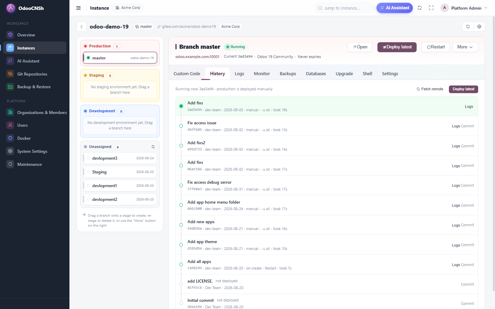
        <div style="display:flex;flex-wrap:wrap;margin:18px -8px 0;">
            <div style="flex:1 1 250px;margin:8px;background:#F9FAFB;border-radius:12px;padding:16px;font-size:14px;line-height:1.6;color:#4B5563;"><b style="color:#111827;">GitHub &amp; Gitee</b><br/>OAuth or personal tokens, webhooks, and polling when the server cannot receive webhooks.</div>
            <div style="flex:1 1 250px;margin:8px;background:#F9FAFB;border-radius:12px;padding:16px;font-size:14px;line-height:1.6;color:#4B5563;"><b style="color:#111827;">Safe deployments</b><br/>Code is checked out per commit and mounted read-only; a failed health check rolls back.</div>
            <div style="flex:1 1 250px;margin:8px;background:#F9FAFB;border-radius:12px;padding:16px;font-size:14px;line-height:1.6;color:#4B5563;"><b style="color:#111827;">Smart updates</b><br/>Only modules changed between two commits are updated, so deployments stay fast.</div>
        </div>
    </div>

    <!-- ============ 02 CREATE ============ -->
    <div style="padding:36px 0;border-top:1px solid #F3F4F6;">
        <div style="font-size:13px;font-weight:700;color:#6D28D9;letter-spacing:1px;">02 &middot; NEW INSTANCE IN SECONDS</div>
        <h3 style="font-size:26px;font-weight:800;color:#111827;margin:6px 0 10px;">Pick a version, an edition and who may access it</h3>
        <p style="font-size:16px;line-height:1.7;color:#4B5563;margin:0 0 18px;">Choose the organization, a name, the stage, Odoo 12 to 19, the language and Community or Enterprise. Add collaborators with
            three access levels &ndash; <b>Access</b> (open Odoo, logs, monitoring), <b>Operate</b> (start/stop, deploy, backups, Shell) and
            <b>Manage</b> (same rights as the owner). The domain is generated automatically and development instances can expire on their own.</p>
        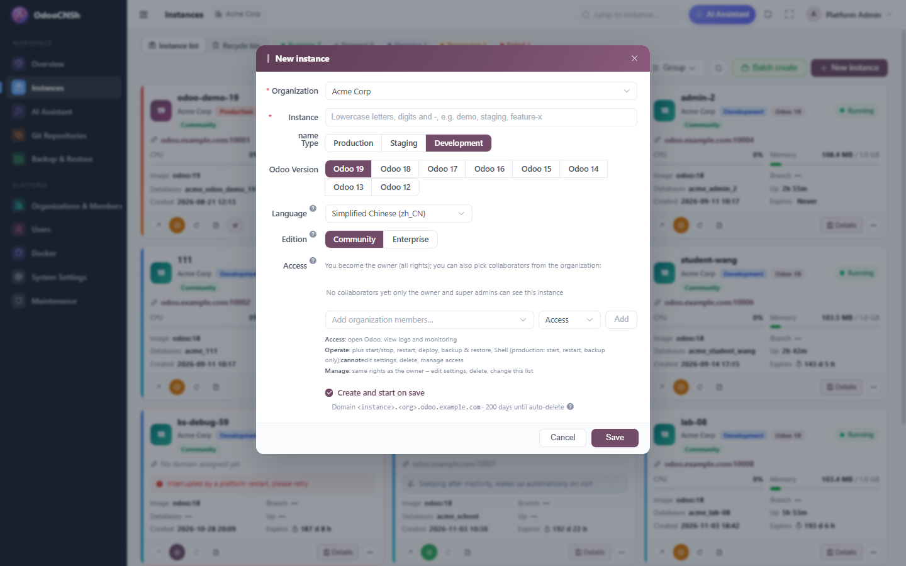
    </div>

    <!-- ============ 03 BATCH ============ -->
    <div style="padding:36px 0;border-top:1px solid #F3F4F6;">
        <div style="font-size:13px;font-weight:700;color:#6D28D9;letter-spacing:1px;">03 &middot; BATCH CREATION</div>
        <div style="display:flex;flex-wrap:wrap;align-items:center;margin:0 -12px;">
            <div style="flex:1 1 380px;padding:0 12px;">
                <h3 style="font-size:26px;font-weight:800;color:#111827;margin:6px 0 10px;">A whole class or team in one click</h3>
                <p style="font-size:16px;line-height:1.7;color:#4B5563;margin:0 0 12px;">Generate names by sequence (<code>dev01</code> &hellip; <code>dev40</code>) or paste a list, set memory, CPU, idle sleep
                    and expiry once, run a <b>Pre-check</b> against quotas, then create them all. Jobs run in a throttled queue, so the server is never overloaded,
                    and each instance reports its own result.</p>
                <p style="font-size:16px;line-height:1.7;color:#4B5563;margin:0;">Ideal for training sessions, workshops, demos and trial accounts.</p>
            </div>
            <div style="flex:1 1 520px;padding:12px;">
                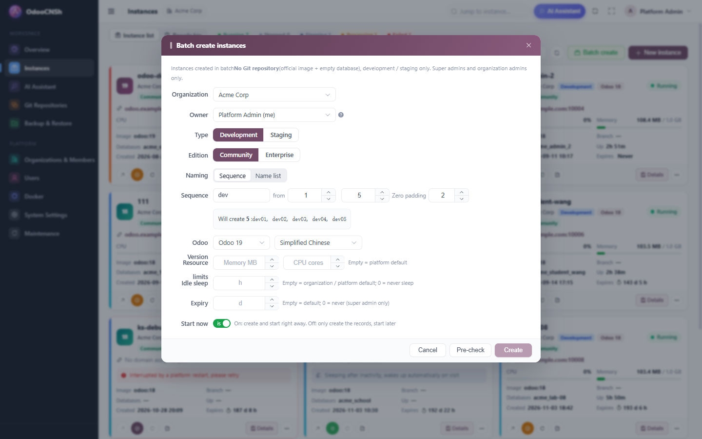
            </div>
        </div>
    </div>

    <!-- ============ 04 CODE EDITOR ============ -->
    <div style="padding:36px 0;border-top:1px solid #F3F4F6;">
        <div style="font-size:13px;font-weight:700;color:#6D28D9;letter-spacing:1px;">04 &middot; CUSTOM CODE IN THE BROWSER</div>
        <h3 style="font-size:26px;font-weight:800;color:#111827;margin:6px 0 10px;">Write Odoo modules without installing anything</h3>
        <p style="font-size:16px;line-height:1.7;color:#4B5563;margin:0 0 18px;">Every instance has a writable, persistent <b>Custom Code</b> folder already in the addons path. Create a module skeleton,
            upload a zip (merge or replace), edit files in a Monaco editor with Odoo-aware autocompletion and syntax pre-check, then press
            <b>Upgrade</b> or <b>Restart to apply</b>. Every save keeps a version you can roll back to, and the change log shows who changed which file and when.</p>
        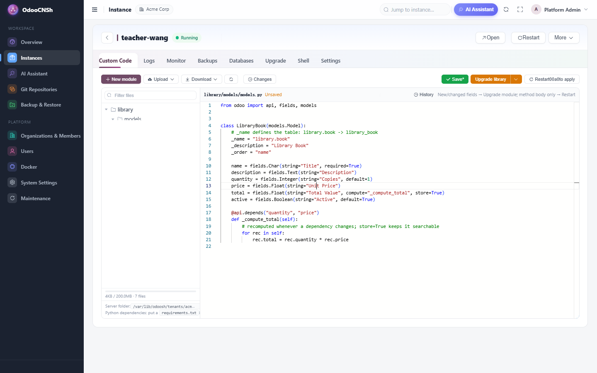
    </div>

    <!-- ============ 05 LOGS ============ -->
    <div style="padding:36px 0;border-top:1px solid #F3F4F6;">
        <div style="font-size:13px;font-weight:700;color:#6D28D9;letter-spacing:1px;">05 &middot; LIVE LOGS</div>
        <h3 style="font-size:26px;font-weight:800;color:#111827;margin:6px 0 10px;">Follow Odoo as it runs</h3>
        <p style="font-size:16px;line-height:1.7;color:#4B5563;margin:0 0 18px;">Container logs stream live to the browser. Filter warnings and errors, search, choose how many lines to load, pause
            auto-scroll and download. The orchestration log shows exactly what the platform did during creation, deployment or restore.</p>
        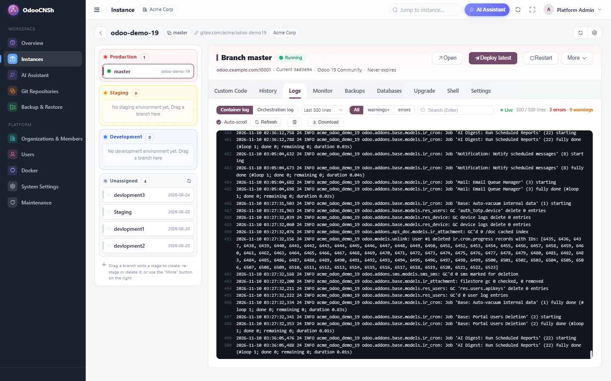
    </div>

    <!-- ============ 06 MONITOR ============ -->
    <div style="padding:36px 0;border-top:1px solid #F3F4F6;">
        <div style="font-size:13px;font-weight:700;color:#6D28D9;letter-spacing:1px;">06 &middot; MONITORING</div>
        <h3 style="font-size:26px;font-weight:800;color:#111827;margin:6px 0 10px;">Resource usage per instance, kept for 7 days</h3>
        <p style="font-size:16px;line-height:1.7;color:#4B5563;margin:0 0 18px;">CPU, memory against its limit, Odoo workers, filestore and database size, network traffic and disk IO, sampled every
            10 seconds, with 1 hour, 6 hours, 24 hours and 7 days views. Every instance has its own memory and CPU limits.</p>
        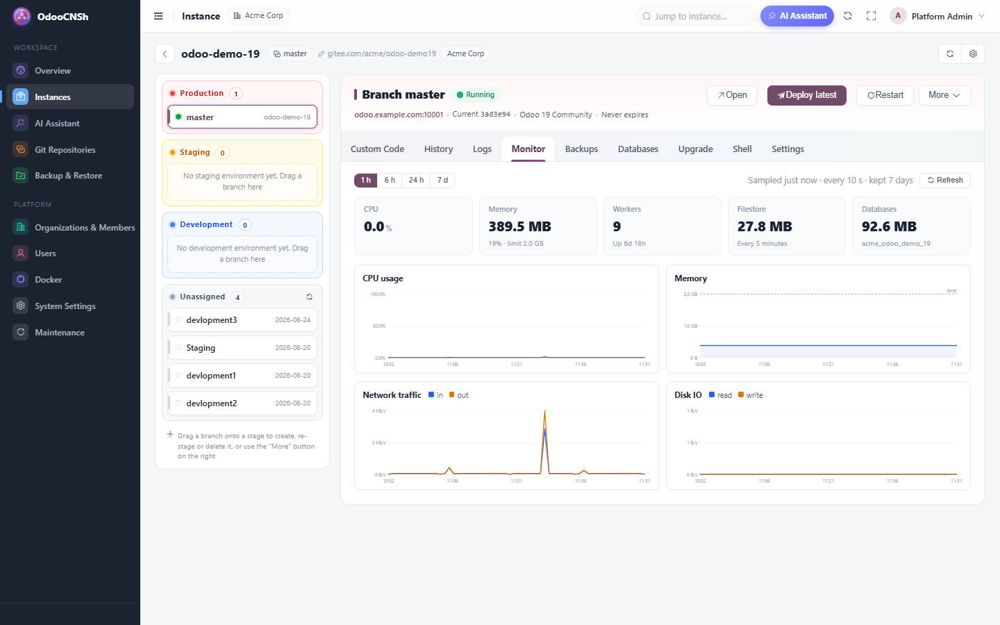
    </div>

    <!-- ============ 07 BACKUPS ============ -->
    <div style="padding:36px 0;border-top:1px solid #F3F4F6;">
        <div style="font-size:13px;font-weight:700;color:#6D28D9;letter-spacing:1px;">07 &middot; BACKUP &amp; RESTORE</div>
        <h3 style="font-size:26px;font-weight:800;color:#111827;margin:6px 0 10px;">Backups you can actually restore</h3>
        <p style="font-size:16px;line-height:1.7;color:#4B5563;margin:0 0 18px;">Backups use the official Odoo zip format (database + filestore) and include a custom-format dump for fast, parallel
            restores. Take a backup by hand, import one, schedule daily backups with retention rules, and restore to any environment of the organization.
            A safety backup is made before each restore.</p>
        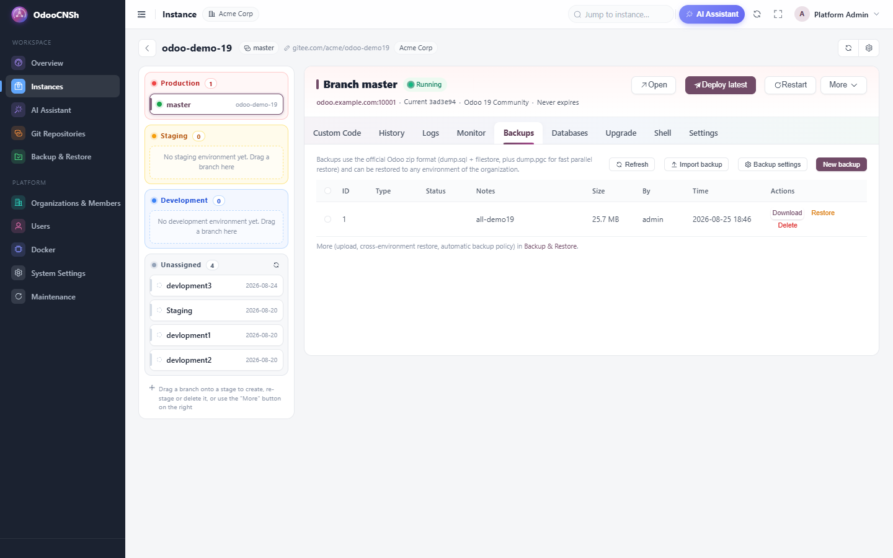
        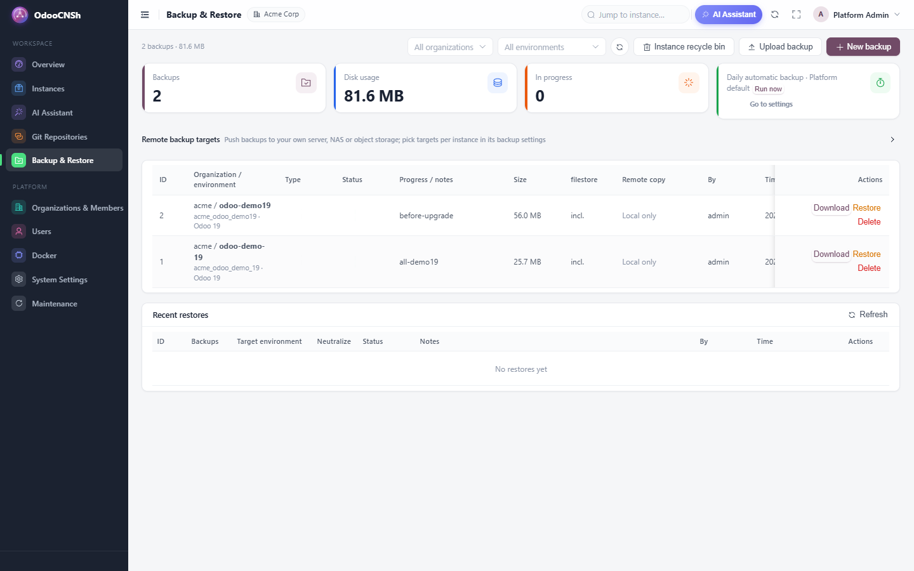
        <div style="display:flex;flex-wrap:wrap;margin:18px -8px 0;">
            <div style="flex:1 1 250px;margin:8px;background:#F9FAFB;border-radius:12px;padding:16px;font-size:14px;line-height:1.6;color:#4B5563;"><b style="color:#111827;">Off-site copies</b><br/>Push every backup to S3, Alibaba OSS, Tencent COS, MinIO, SFTP or WebDAV; restores pull it back and verify the checksum.</div>
            <div style="flex:1 1 250px;margin:8px;background:#F9FAFB;border-radius:12px;padding:16px;font-size:14px;line-height:1.6;color:#4B5563;"><b style="color:#111827;">Quotas</b><br/>Per-organization backup quota; the oldest automatic backups go first.</div>
            <div style="flex:1 1 250px;margin:8px;background:#F9FAFB;border-radius:12px;padding:16px;font-size:14px;line-height:1.6;color:#4B5563;"><b style="color:#111827;">Recycle bin</b><br/>Deleted instances stay restorable for a configurable number of days.</div>
        </div>
    </div>

    <!-- ============ 08 SETTINGS ============ -->
    <div style="padding:36px 0;border-top:1px solid #F3F4F6;">
        <div style="font-size:13px;font-weight:700;color:#6D28D9;letter-spacing:1px;">08 &middot; INSTANCE SETTINGS</div>
        <h3 style="font-size:26px;font-weight:800;color:#111827;margin:6px 0 10px;">Change the stage, limits and odoo.conf safely</h3>
        <p style="font-size:16px;line-height:1.7;color:#4B5563;margin:0 0 18px;">Move an environment between production, staging and development, set the default deploy action and auto-deploy,
            memory and CPU limits, log level, idle sleep, extra databases and extra <code>odoo.conf</code> options. The platform generates <code>odoo.conf</code>
            itself and only accepts whitelisted keys, so nobody can break the database or port settings. One-click login opens Odoo as admin
            without typing a password.</p>
        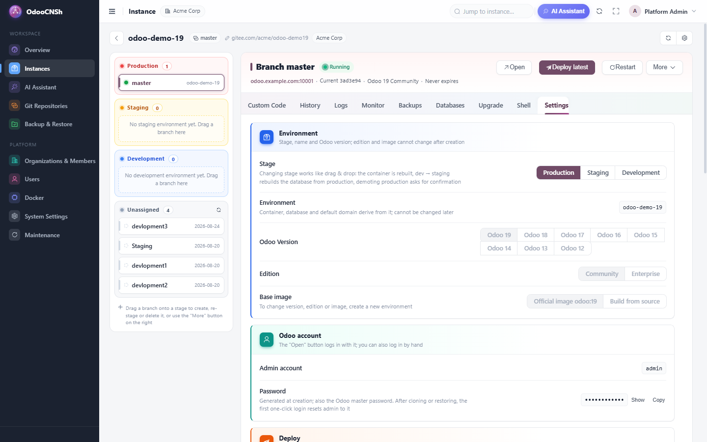
        <div style="display:flex;flex-wrap:wrap;margin:18px -8px 0;">
            <div style="flex:1 1 250px;margin:8px;background:#F9FAFB;border-radius:12px;padding:16px;font-size:14px;line-height:1.6;color:#4B5563;"><b style="color:#111827;">Extra databases</b><br/>Several databases in one Community instance, each on its own sub-domain.</div>
            <div style="flex:1 1 250px;margin:8px;background:#F9FAFB;border-radius:12px;padding:16px;font-size:14px;line-height:1.6;color:#4B5563;"><b style="color:#111827;">Web Shell</b><br/>A terminal in the browser with <code>odoo-bin shell</code>, <code>psql</code>, <code>odoo-update</code> and more; production input is audited.</div>
            <div style="flex:1 1 250px;margin:8px;background:#F9FAFB;border-radius:12px;padding:16px;font-size:14px;line-height:1.6;color:#4B5563;"><b style="color:#111827;">Upgrade helpers</b><br/>One-click Enterprise code upgrade and a guided path for major version upgrades.</div>
        </div>
    </div>

    <!-- ============ 09 OVERVIEW ============ -->
    <div style="padding:36px 0;border-top:1px solid #F3F4F6;">
        <div style="font-size:13px;font-weight:700;color:#6D28D9;letter-spacing:1px;">09 &middot; PLATFORM OVERVIEW</div>
        <h3 style="font-size:26px;font-weight:800;color:#111827;margin:6px 0 10px;">The whole server on one page</h3>
        <p style="font-size:16px;line-height:1.7;color:#4B5563;margin:0 0 18px;">Organizations, instances, users and running containers, host CPU, memory and disk, Docker status and a feed of recent
            deployments, backups, restores, pushes and new instances.</p>
        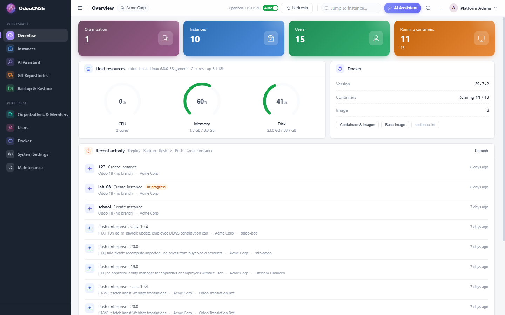
    </div>

    <!-- ============ 10 GIT ============ -->
    <div style="padding:36px 0;border-top:1px solid #F3F4F6;">
        <div style="font-size:13px;font-weight:700;color:#6D28D9;letter-spacing:1px;">10 &middot; GIT REPOSITORIES &amp; ENTERPRISE CODE</div>
        <h3 style="font-size:26px;font-weight:800;color:#111827;margin:6px 0 10px;">Connect repositories once, use them everywhere</h3>
        <p style="font-size:16px;line-height:1.7;color:#4B5563;margin:0 0 18px;">Link GitHub or Gitee accounts, connect repositories with webhooks or tokens, choose auto or manual deploy per repository,
            browse branches and push logs. Enterprise code is stored once per version (upload a zip or copy it on the server) and mounted read-only
            into every Enterprise instance &ndash; you bring your own valid Odoo Enterprise license.</p>
        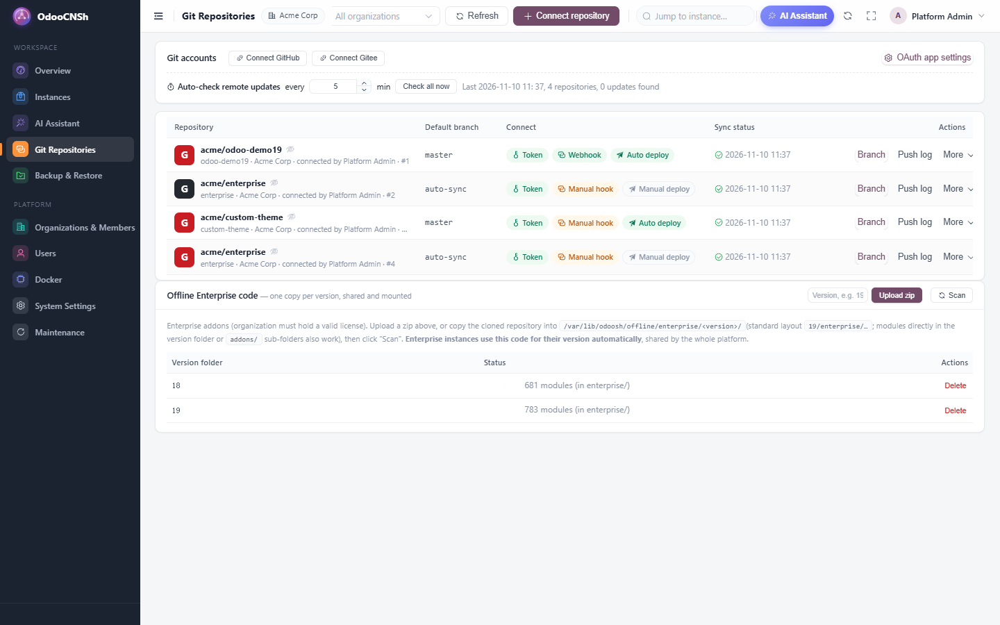
    </div>

    <!-- ============ 11 AI ============ -->
    <div style="padding:36px 0;border-top:1px solid #F3F4F6;">
        <div style="font-size:13px;font-weight:700;color:#6D28D9;letter-spacing:1px;">11 &middot; AI OPS ASSISTANT</div>
        <div style="display:flex;flex-wrap:wrap;align-items:center;margin:0 -12px;">
            <div style="flex:1 1 380px;padding:0 12px;">
                <h3 style="font-size:26px;font-weight:800;color:#111827;margin:6px 0 10px;">Ask why an instance is down</h3>
                <p style="font-size:16px;line-height:1.7;color:#4B5563;margin:0 0 12px;">The built-in assistant checks logs, metrics, health and deployment history by itself and explains what it found.
                    Every change it proposes (restart, deploy, &hellip;) is shown as a card you approve first, and it can only do what your own role allows.</p>
                <p style="font-size:16px;line-height:1.7;color:#4B5563;margin:0;">Works with OpenAI-compatible models; you bring your own API key. Also available as a side panel on every page.</p>
            </div>
            <div style="flex:1 1 520px;padding:12px;">
                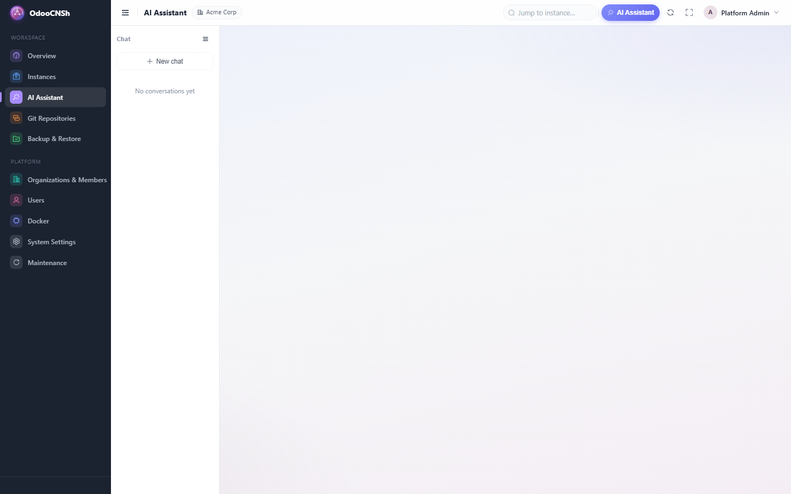
            </div>
        </div>
    </div>

    <!-- ============ 12 ADMIN ============ -->
    <div style="padding:36px 0;border-top:1px solid #F3F4F6;">
        <div style="font-size:13px;font-weight:700;color:#6D28D9;letter-spacing:1px;">12 &middot; ADMINISTRATION</div>
        <h3 style="font-size:26px;font-weight:800;color:#111827;margin:6px 0 10px;">Docker, settings and self-update</h3>
        <p style="font-size:16px;line-height:1.7;color:#4B5563;margin:0 0 18px;">See every container and image, configure the platform name and badge, base domain, access mode (domain routing or
            direct ports for intranets without DNS), login captcha and lockout, default resource limits, idle sleep, backup policy and retention.
            The platform updates and restarts itself from the console without touching running Odoo instances.</p>
        <div style="display:flex;flex-wrap:wrap;margin:0 -7px;">
            <div style="flex:1 1 460px;margin:7px;">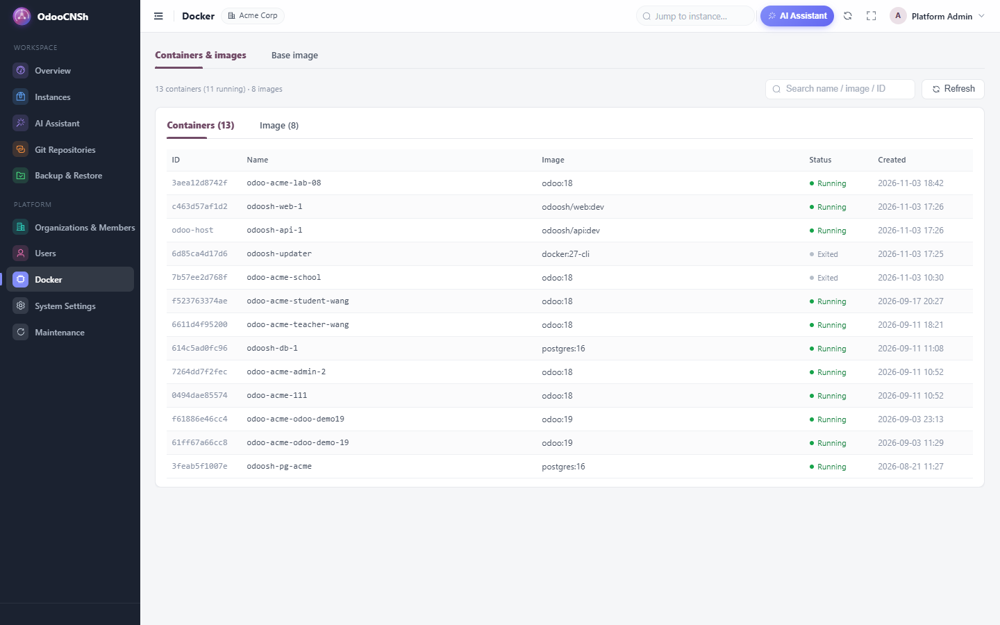<p style="font-size:13px;color:#9CA3AF;margin-top:6px;">Containers &amp; images</p></div>
            <div style="flex:1 1 460px;margin:7px;">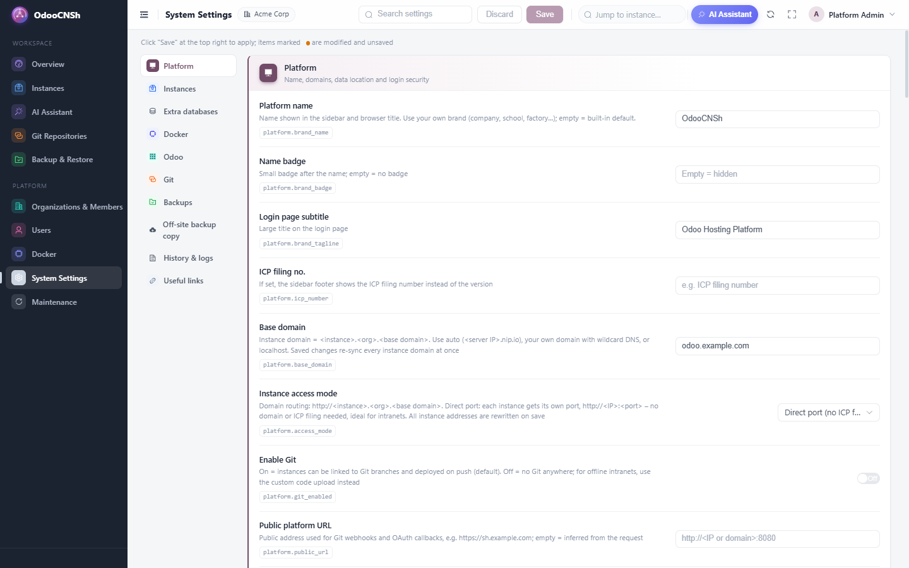<p style="font-size:13px;color:#9CA3AF;margin-top:6px;">System settings</p></div>
        </div>
        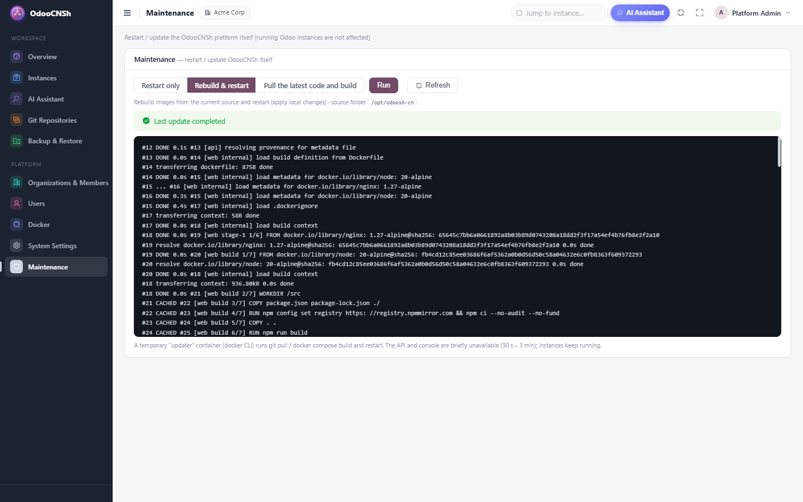
        <p style="font-size:13px;color:#9CA3AF;margin-top:6px;">Restart, rebuild or update the platform from the browser</p>
    </div>

    <!-- ============ TECH ============ -->
    <div style="padding:30px 0 30px;">
        <div style="background:#F9FAFB;border-radius:16px;padding:28px;">
            <h3 style="font-size:22px;font-weight:800;color:#111827;margin:0 0 14px;">Architecture &amp; requirements</h3>
            <div style="display:flex;flex-wrap:wrap;font-size:15px;line-height:1.9;color:#374151;">
                <div style="flex:1 1 400px;padding-right:16px;">
                    &#9679; Linux server (Ubuntu, Debian, CentOS, &hellip;) or WSL2 for trials<br/>
                    &#9679; Python 3.12 + FastAPI backend, Vue 3 console, nginx reverse proxy<br/>
                    &#9679; One Docker container per Odoo instance, with its own network<br/>
                    &#9679; One PostgreSQL 16 container per organization, one database role per instance<br/>
                    &#9679; Official <code>odoo:&lt;version&gt;</code> images or build from source
                </div>
                <div style="flex:1 1 400px;">
                    &#9679; Domain routing with wildcard DNS, or direct ports without a domain<br/>
                    &#9679; HTTPS with Let&rsquo;s Encrypt (wildcard via DNS or per domain)<br/>
                    &#9679; Encrypted credentials, captcha, login lockout, audit of Shell sessions<br/>
                    &#9679; One install script, online or offline (Docker, images, Enterprise code)<br/>
                    &#9679; REST API with OpenAPI docs and access tokens for integrations
                </div>
            </div>
        </div>
    </div>

    <!-- ============ NOTE ============ -->
    <div style="padding:0 0 30px;">
        <div style="background:#FFFBEB;border:1px solid #FDE68A;border-radius:14px;padding:20px 24px;font-size:15px;line-height:1.7;color:#78350F;">
            <b>Good to know:</b> OdooCNSh is a standalone platform installed on your own Linux server; this Odoo module adds the
            <b>OdooCNSh</b> menu with this overview. After purchase, contact us to receive the platform package and free installation help.
            Odoo Enterprise instances require your own valid Odoo Enterprise subscription. OdooCNSh is an independent product and is not
            affiliated with or endorsed by Odoo S.A.
        </div>
    </div>

    <!-- ============ FAQ ============ -->
    <div style="padding:10px 0 40px;">
        <h2 style="text-align:center;font-size:32px;font-weight:800;color:#111827;margin:0 0 26px;">FAQ</h2>
        <div style="border:1px solid #E5E7EB;border-radius:12px;padding:18px 20px;margin-bottom:12px;">
            <div style="font-weight:700;font-size:16px;color:#111827;">What do I get after purchase?</div>
            <div style="font-size:15px;color:#4B5563;line-height:1.7;margin-top:6px;">This Odoo module plus the full OdooCNSh platform package with its install script. Send us your order and we help you install it on your server.</div></div>
        <div style="border:1px solid #E5E7EB;border-radius:12px;padding:18px 20px;margin-bottom:12px;">
            <div style="font-weight:700;font-size:16px;color:#111827;">What server do I need?</div>
            <div style="font-size:15px;color:#4B5563;line-height:1.7;margin-top:6px;">A Linux server with Docker support. 4 GB RAM is enough to start; plan roughly 0.5&ndash;1 GB per running instance. Idle development instances sleep and use no memory.</div></div>
        <div style="border:1px solid #E5E7EB;border-radius:12px;padding:18px 20px;margin-bottom:12px;">
            <div style="font-weight:700;font-size:16px;color:#111827;">Which Odoo versions can it host?</div>
            <div style="font-size:15px;color:#4B5563;line-height:1.7;margin-top:6px;">Odoo 12 to 19, Community and Enterprise, side by side on the same server. The version is a property of each instance.</div></div>
        <div style="border:1px solid #E5E7EB;border-radius:12px;padding:18px 20px;margin-bottom:12px;">
            <div style="font-weight:700;font-size:16px;color:#111827;">Do I need Git?</div>
            <div style="font-size:15px;color:#4B5563;line-height:1.7;margin-top:6px;">No. Git integration can be switched off completely; instances then use the browser code editor and zip uploads for custom modules.</div></div>
        <div style="border:1px solid #E5E7EB;border-radius:12px;padding:18px 20px;margin-bottom:12px;">
            <div style="font-weight:700;font-size:16px;color:#111827;">Can it run without Internet access?</div>
            <div style="font-size:15px;color:#4B5563;line-height:1.7;margin-top:6px;">Yes. Prepare an offline bundle (Docker packages, images, Enterprise code) on a connected machine and install it with the same script on the intranet server.</div></div>
        <div style="border:1px solid #E5E7EB;border-radius:12px;padding:18px 20px;margin-bottom:12px;">
            <div style="font-weight:700;font-size:16px;color:#111827;">Can I put my own brand on it?</div>
            <div style="font-size:15px;color:#4B5563;line-height:1.7;margin-top:6px;">Yes. Platform name, badge, login page title and filing number are set in System Settings.</div></div>
        <div style="border:1px solid #E5E7EB;border-radius:12px;padding:18px 20px;margin-bottom:12px;">
            <div style="font-weight:700;font-size:16px;color:#111827;">Can my own portal or Odoo log users in?</div>
            <div style="font-size:15px;color:#4B5563;line-height:1.7;margin-top:6px;">Yes. Access tokens let an external system create users and open the console for them with one-click login, optionally embedded without the side menu.</div></div>
    </div>

    <!-- ============ CONTACT ============ -->
    <div style="text-align:center;padding:40px 20px;margin-bottom:40px;background:linear-gradient(135deg,#1E1B4B 0%,#6D28D9 55%,#017E84 100%);border-radius:18px;color:#fff;">
        <h2 style="font-size:28px;font-weight:800;margin:0 0 10px;color:#fff;">Want a demo or help with the installation?</h2>
        <p style="font-size:17px;margin:0 0 14px;color:#EDE9FE;">Free installation support for every purchase.</p>
        <p style="font-size:18px;font-weight:700;margin:0;color:#fff;">&#9993; 18438630181@163.com</p>
    </div>

</div>
</section>
